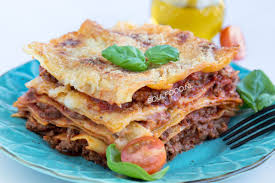

Lasagne op de italiaanse wijze.
Lasagne is een comfort food, erg populair en zeer lekker. Het kan alleen wel lang duren om te maken.
Het is natuurlijk italiaans, met pastabladen en verse basilicum en de laagjes zijn zeer herkenbaar.